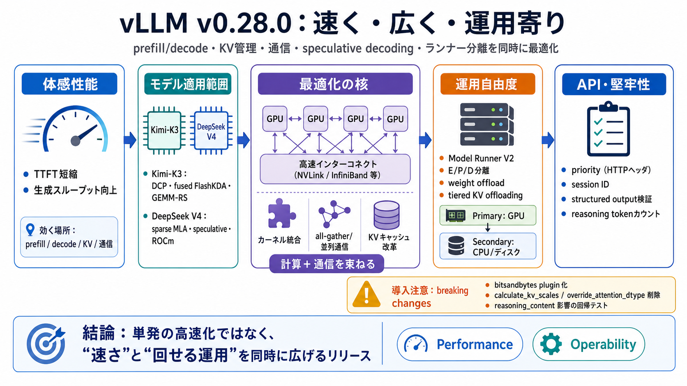

速い領域
カーネル統合＋通信最適化
動く環境
CUDA/ROCm（対応拡大）
注意点
breaking changesあり

v0.28.0 速く・広く・運用寄り
vLLM v0.28.0 は、prefill/decode、KV管理、並列通信、speculative decoding、ランナー分離、オフロード、API拡張を同時に最適化するリリースです。
どこがボトルネックか
体感はTTFT（Time To First Token）と生成中スループットで決まります。v0.28.0 は、その両方に効きやすい prefill/decode・KV・通信・検証制御を広く更新しています。
特定モデルで大きく進化
Kimi-K3・DeepSeek V4 系を中心に、カーネル統合、分散通信、MoE/sparse系の実装到達点が増えています。結果として「速い範囲」が広がっています。
Kimi-K3 のスタック最適化
Decode Context Parallel（DCP）、prefill/decode をまとめる fused FlashKDA、GEMM-RS、all-gathers 統合など、計算と通信を束ねて改善しています。
| 要素 | 狙い |
|---|---|
| Decode Context Parallel（DCP） | 文脈方向の並列化で停滞を削る |
| fused FlashKDA | prefill/decode のカーネル統合 |
| GEMM-RS／all-gathers | 計算＋通信の同時ボトルネックを圧縮 |
DeepSeek V4 の実運用カバレッジ
sparse MLA が plain decode／MTP／DSpark speculative decoding までエンドツーエンドで動作するとされています。あわせて speculative decoding と ROCm 対応（gfx11等）の整備が進んでいます。
運用自由度：Runner V2 と KV
Model Runner V2 と E/P/D disaggregation（Encoder/Prefill/Decoder等の分離）、weight offloading、KVキャッシュレイアウト改革、トークン単位プーリングなどで、スケール運用を意識した再設計が進んでいます。
tiered KV offloading
Tiered KV cache offloading は、ディスクも含む二次ティアを管理する設計として強化されています。メモリ制約下でも運用できる余地を広げる狙いです（効果はワークロード依存）。
| 段 | 意味 |
|---|---|
| Primary | 主にGPUメモリに保持 |
| Secondary | CPU／ディスクなどへ段階退避 |
| Policy | どれをいつ移すかを最適化 |
speculative decoding 進化
ドラフト候補を使い、確定検証のスケジューリングやカバレッジを更新することで、TTFT や無駄な検証を抑える方向の改善が示されています。DFlash2／DSpark 系の記載もあります。
プロダクト運用：APIと堅牢性
request priority をHTTPヘッダから扱う、セッションIDの配線、ストリーミング解析で reasoning token数をカウント、structured outputの検証強化などが追加されています。
導入時の最大の注意：breaking changes
bitsandbytes の扱いが out-of-tree plugin 化され、calculate_kv_scales／override_attention_dtype が削除され、reasoning_content 出力の扱いに影響があり得ると明示されています。
結論：速さだけでなく「回せる」
v0.28.0 は、単発の高速化ではなく、カーネル・通信・KV・ランナー構造・オフロードを同時に整備する方向です。特に Kimi-K3／DeepSeek V4 の適用範囲が広がる点が実利用価値になります。
参照のために
次の観点で原文（vLLM GitHub Release v0.28.0）を確認すると、速さと破壊的変更の両方を取りこぼしません。
No references found